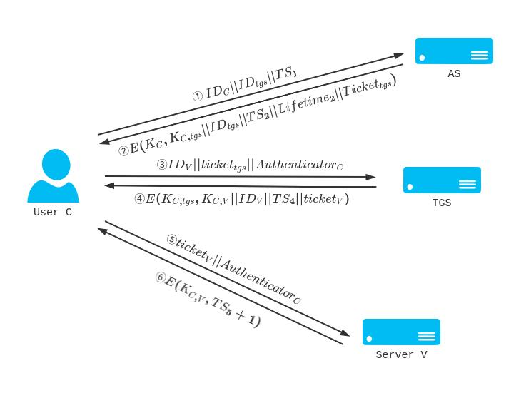

Kerberos 协议参考了许多 Needham-Schroeder 协议的内容，如有需要请阅读上一篇文章。
E(key,message) 和Ekey(message) 都表示用密钥key 加密消息message。
可能和之前写的风格不一样，别在意：(
在一个开放的网络中，有授权的用户应该能够去访问这个网络中的各个服务器，而其他没有权限的用户则不能。如果每一台服务器都运行着一个认证服务，那么这无疑是一笔极其巨大的开销。此外，在开放的网络中，还有可能会有这样的威胁出现：
- 一个攻击者伪装成其他的正常用户。
- 攻击者修改自己的网络地址发送伪造请求。
- 攻击者实行窃听或者重放攻击。
Kerberos 是 MIT 为了 Athena 计划开发的一个认证协议，常用的包括了已经逐渐淘汰的 Kerberos V4 和目前标准的 Kerberos V5。这个协议使用了对称密码体系，依靠一个集中的认证服务器来实现对用户的认证。
# Kerberos V4
# 简化的例子
前面提到，在开放的环境下如果每台服务器都有一个认证服务，那么这会是巨大的开销。因此，Kerberos 采用了一台集中的 认证服务器 (Authentication Server, AS) 来实现对用户的认证。AS 的数据库中存放有所有用户的口令信息，同时 AS 和所有服务器之间也有独立的共享密钥。
一个最基本的认证模型是这样的：
AS 充当了一个 “售票机”，用户 C 刷上自己的身份证（也就是身份标识IDC），输入自己的密码（也就是存储在 AS 那里的口令PC），选择想要去的地方（需要访问的服务器 V 的身份标识IDV），售票机在确认无误之后就会吐出一张车票ticket。
用户 C 拿到车票之后，就可以去进站（访问服务器 V）检票。那么服务器 V 就会去检查这张车票ticket 是否有效、这张车票是不是冒名顶替的（用户 C 的身份IDC 和ticket 中的信息是否一致）。如果一切正常，用户 C 就可以正常访问了服务器 V。
在这个协议中，用户 C 首先将自己的身份信息IDC、口令PC 和需要访问的服务器身份信息IDV 发送给 AS。接下来，AS 生成了一个ticket=E(KV,IDC∣∣ADC∣∣IDV) 发送给 C，其中ADC 是用户 C 的网络地址。当用户 C 需要去访问服务器 V 的时候，他需要把自己的身份和凭证一起发送给服务器 V。
我们来看 AS 生成的ticket。首先，凭证中需要能够证明身份的字段，这也就是为什么需要包含IDC，服务器 V 在解密ticket 的时候就会验证用户身份和凭证是否一致。接下来，IDV 也是必要的，服务器 V 需要知道这个ticket 是否就是用来访问自己的，同时这个字段也能验证使用KV 解密ticket 是否正确。
一个问题是为什么凭证中需要网络地址ADC 字段？我们可以构想这样的一种情况，一个攻击者 D 截获了 C 的凭证ticketC，他把消息IDC∣∣ticketC 发送给了服务器 V，服务器 V 验证之后发现一切正确，攻击者 D 就能够冒名顶替 C 去访问服务器 V。因此，我们需要在ticket 中包含用户 C 的网络地址，以避免出现顶替的现象。
这样实际上就挺好的，但是也有一些改进的地方：
首先最致命的问题在于，用户 C 发送给 AS 的口令是明文传输的，一个攻击者可以去窃听这个消息从而获得用户 C 的口令。
其次，用户 C 如果需要多次访问不同的服务器，那么他就需要多次向 AS 申请访问不同服务器的ticket，这是一个比较麻烦的事情。（理论上如果用户 C 要多次访问服务器 V 的话，他只要保存下来 AS 给的ticket 就行了……）
为了解决这些问题，Kerberos 协议引入了一个票据授权服务 (Ticket Granting Service, TGS)。这种思路有些类似所谓的 “会员制”：AS 用来验证用户的 “会员身份”，并且发放一张 “会员卡”，用户凭借 “会员卡” 去找 “售票者” TGS 兑换 “门票”，最后凭实际的 “门票” 去访问不同的服务。
当用户 C 需要去访问网络中的其他服务时，他需要向 AS 先发起一个请求IDC∣∣IDtgs，这个请求包括了用户 C 的身份和 TGS 的身份标识。AS 接收到请求之后，向 C 发送一个用 C 的口令作为密钥加密的票据E(KC,tickettgs)。tickettgs=E(Ktgs,IDC∣∣ADC∣∣IDtgs∣∣TS1∣∣Lifetime1)，其中TS1 是一个用来验证时间同步的时间戳，也能够用来和Lifetime1 确定 TGT 的有效时间。这个tickettgs 被称为票据授权票据 (ticket granting ticket, tgt)。
很明显，这样的操作避免了用户 C 的口令在网络上明文传输的风险。同时，即使一个攻击者截获了密文E(KC,tickettgs)，他也不能够解密得到票据。同时，一个有限的Lifetime1 也能保证票据不会被一个后来的攻击者利用（在用户 C 离开之后，一个攻击者 D 使用了 C 用过的电脑并用之前的凭证登陆 C 的服务）。
接下来，当用户 C 需要去访问一个服务器的时候，他会把IDC∣∣IDV∣∣tickettgs 发送给 TGS。TGS 会对这些信息进行验证，并给用户 C 发放一个临时凭证ticketV=E(KV,IDC∣∣ADC∣∣IDV∣∣TS2∣∣Lifetime2) 用来访问服务器 V，这个临时的凭证也就是服务授权票据（service granting ticket）。
在获得了服务授权票据之后，用户 C 就可以通过这个票据去访问需要的服务器 V，这个过程只需要用户给服务器 V 发送IDC∣∣ticketV 就可以了。
整个流程是这样的：
这实际上是一个简化版本的 Kerberos v4 协议。上面的这个协议基本上已经解决了口令传输、重复认证等问题。但是还有一些需要解决的地方：
- 攻击者仍然可能截获 tgt 之后在 Lifetime 内顶替用户 C。（我们需要有一种方法让 TGS 或者应用服务器验证使用票据的是正确的用户）
- 攻击者有可能搭建一个假冒的服务器去替代真实的服务器，从而截获其他用户的信息。例如攻击者可能会搭建一个伪造的 TGS，去截获用户 C 的数据。（我们需要一种方法去让用户确认服务器就是正确的服务器）
# 完整的 Kerberos v4 协议
下面我们来看实际中的 Kerberos v4 协议：
- 用户 C 向 AS 发送IDC∣∣IDtgs∣∣TS1，其中TS1 用来验证用户 C 和 AS 之间时间同步。
- AS 向用户 C 发送E(KC,KC,tgs∣∣IDtgs∣∣TS2∣∣Lifetime2∣∣Tickettgs)。其中tickettgs=E(Ktgs,KC,tgs∣∣IDC∣∣ADC∣∣IDtgs∣∣TS2∣∣Lifetime2)。KC,tgs 是用户 C 和 TGS 之间的共享密钥，TS2 是 TGT 的发放时间，结合Lifetime2 可以确定 TGT 的有效期。
可以看到，相较于前面简化的 Kerberos 协议，这里 AS 还多给予了一个用户 C 和 TGS 之间的共享密钥。随后用户 C 和 TGS 之间的通信就可以通过这个共享密钥来加密。
- 用户 C 向 TGS 发送IDV∣∣tickettgs∣∣AuthenticatorC。其中AuthenticatorC=E(KC,tgs,IDC∣∣ADC∣∣TS3)，TS3 标识了AuthenticationC 的生成时间。
- TGS 向用户 C 发放E(KC,tgs,KC,V∣∣IDV∣∣TS4∣∣ticketV)。其中ticketV=E(KV,KC,V∣∣IDC∣∣ADC∣∣IDV∣∣TS4∣∣Lifetime4) 是用户 C 访问服务器 V 的服务授权票据，中间的TS4 标识了生成时间。KC,V 实际上就是用户 C 和服务器 V 之间通信的会话密钥。
这一部分和前面的也类似，但是多了一个用于认证票据的AuthenticationC，这个授权有着非常短的有效期，因此能够防止攻击者实施重放攻击。同时，如果没有共享密钥KC,tgs 就无法生成AuthenticatorC，因此这可以防止一个攻击者利用tickettgs 来伪造AuthenticatorC。
- 用户 C 向服务器 V 发送ticketV∣∣AuthenticatorC。其中AuthenticatorC=E(KC,V,IDC∣∣ADC∣∣TS5)，TS5 标识了AuthenticationC 的生成时间。
- 服务器 V 向用户返回E(KC,V,TS5+1)。这是一个类似于挑战 - 应答的步骤，用来实现客户端对服务器的认证。

以上的步骤是一个完整的 Kerberos v4 认证协议。
在这个协议中，除了第一步之外所有的步骤都被加密了 —— 攻击者无法从中获取到任何信息，除非他获得了用户 C 的口令KC。而一个攻击者搭建的虚假服务器也无法成功的参与这个协议 —— 虚假服务器没有和 AS 或者 TGS 共享的密钥，因此无法解密用户发来的密文。而一个拿到了凭证的攻击者即使等到了用户 C 离开客户端，也不能从这个客户端已有的信息去伪造一个AuthenticatorC，因为攻击者没有相应的密钥。
# Kerberos 域
在一个使用 Kerberos 的网络中，一般有一台 Kerberos 服务器和若干的主机和客户端。Kerberos 服务器存储了所有用户的身份信息和口令，同时和所有的服务器分别共享了一个不同的密钥。这整个体系就是一个 Kerberos 域。
# Kerberos V5
前面的 Kerberos V4 实际上是存在一些问题的：
- Kerberos V4 使用的是 DES 加密算法，这种算法在目前的算力下已经不够安全。同时 Kerberos V4 使用的 PCBC 模式并不能保证安全性。
- Kerberos V4 中一些字段如E(KC,KC,tgs∣∣IDtgs∣∣TS2∣∣Lifetime2∣∣Tickettgs) 实际上经过了两层加密（一层使用了用户 C 的密钥加密，内层的ticket 又使用了 TGS 的密钥进行加密），这实际上有些浪费了算力。
- 使用口令作为密钥，实际上存在本地破解的风险。
为了解决这些问题，Kerberos V5 进行了一些改进。Kerberos v5 的流程是这样的：
- 用户 C 向 AS 发送Options∣∣IDC∣∣RealmC∣∣IDtgs∣∣Times∣∣Nonce1。
在 v4 版本的基础上，这一步增加了这些内容：Options 作为一个选项字段，其中包括了使用的加密算法等信息；RealmC 是用户 C 的所在的域，这提供了 Kerberos 跨域的功能；Times 可以用来请求票据的起始时间、结束时间和更新后的过期时间等信息，因此用户可以自行设置凭证的过期时间；Nonce1 是一个随机数，用来保证信息不会被重放攻击。 - AS 向用户 C 发送RealmC∣∣IDC∣∣tickettgs∣∣E(KC,KC,tgs∣∣Times∣∣Nonce2∣∣RealmV∣∣IDV)。tickettgs=E(Ktgs,flags∣∣KC,tgs∣∣RealmC∣∣IDC∣∣ADC∣∣Times)。
这段信息中包括了各个服务器所在的域，协议的选项信息等。同时这里的ticket 并不是处于两层加密中，而是在单独的一层加密里，这也降低了运算的复杂性。
- 用户 C 向 TGS 发送Options∣∣IDV∣∣Times∣∣Nonce2∣∣tickettgs∣∣AuthenticatorC。其中AuthenticatorC=E(KC,tgs,IDC∣∣RealmC∣∣TS1)。
这一步中相较于之前增加了 Nonce，可以防止消息被重放攻击，同时还包括了协议的选项字段。 - TGS 向用户 C 发送RealmC∣∣IDC∣∣ticketV∣∣E(KC,tgs,KC,V∣∣Times∣∣Nonce2∣∣RealmV∣∣IDV)。其中ticketV=E(KV,Flags∣∣KC,V∣∣RealmC∣∣IDC∣∣ADC∣∣Times)。
- 用户 C 向服务器 V 发送Options∣∣ticketV∣∣AuthenticatorC。其中Authenticator_C=E(K_{C,V},ID_C||Realm_C||TS_2||Subkey||Seq#)。
这里用户 C 和服务器 V 之间通信并不一定使用KC,V 作为密钥，他们之间会使用每次会话不同的Subkey 作为会话密钥使用。 - 服务器 V 向用户 C 回应E(K_{C,V},TS_2||Subkey||Seq#)。这一步依然是用来进行服务端向客户端的认证。
# 参考资料
[1] 网络安全基础 —— 应用与标准（第六版），William Stallings.